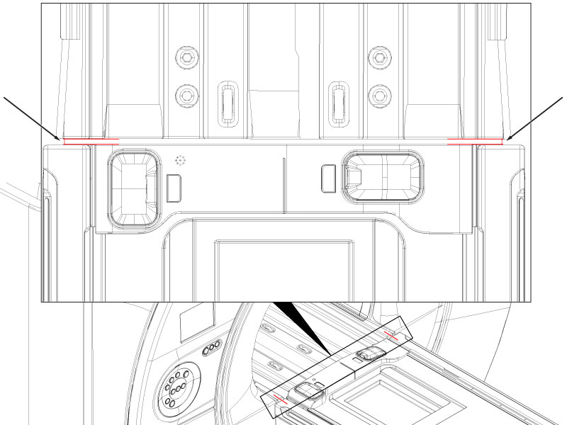
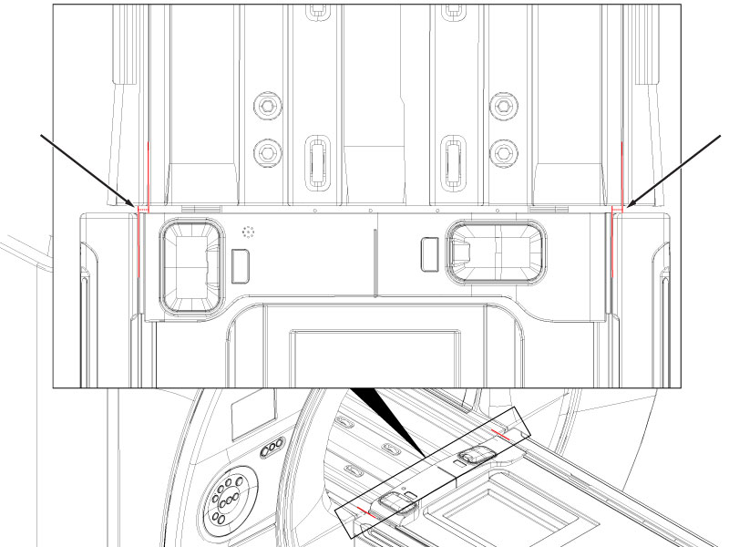
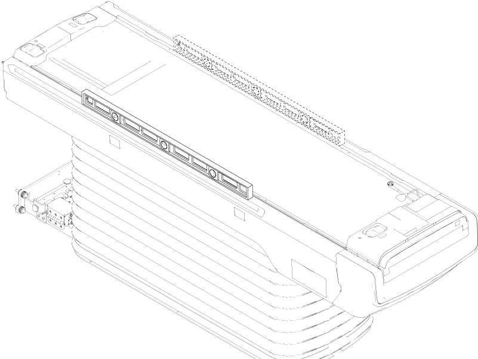

Makes sure the longitudinal gap, lateral center, height, and level are within tolerance. Provides adjusting procedures for out of tolerance measurements.
Prerequisites
Personnel requirements
Required persons
Preliminary requirements
Procedure
Finalization
2
-
65 minutes
-
Tools and test equipment
Item
Quantity
Part number
Manufacturer
Nonferrous Metric Ruler
1
-
-
Nonferrous Level - 910 mm (36 inch) Minimum
1
-
-
Required conditions
The patient table is installed.
The table is at the top most position.
Safety
Before working in any GE HealthCare MR suite or doing any GE HealthCare service procedure, you must:
Have read and understood all hazard conditions and safety requirements in the latest revision of the GE HealthCare MR Service Safety Manual (5452735).
Have successfully completed all relevant GE HealthCare Environmental Health and Safety (EHS) courses (or for non-GE employees, equivalent workplace training courses).
Comply with all site-specific training and workplace safety requirements.
If you have any safety concerns at any time, do not begin work or immediately stop work and move to a safe location. Immediately contact your supervisor or site safety officer for instructions on how to proceed.
Procedure
Make sure the left and right gaps between the bridge and the table are 6.0 +/- 2.0 mm.
Figure 1. Longitudinal gap measurement points

Make sure the difference between left and right gap measurements is less than or equal to 1 mm.
Make sure the table is centered by measuring the lateral difference between the table edge line and the bridge edge line.
The lateral difference should be 0 to 0.5 mm.Figure 2. Lateral center measuring points

Make sure the height difference between the table top and the bridge top on both the left and right sides is less than 1 mm.
Figure 3. Table height measurement point
Place the non-ferrous level on one side of the table top.
Figure 4. Table level placement

Raise one end of the level and hold it in the leveled position. Make sure the distance (in mm) between the table top and the level at 910 mm is less than or equal to 4 mm. Do this on both the left and right sides of the table.